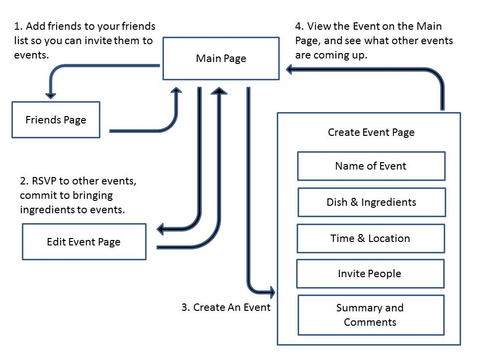

Fallera - Social Cooking
Human Factors Interface Design, Fall 2012

In our feedback, we learned we have many features that do not function well, and it would be better for us to narrow our focus by removing excess features and making the few features we do keep work really well. We realized that we were overly ambitious in how much we wanted to achieve, so we have decided to scale back.
In addition, we looked at an existing iPad app called “All Recipes” that already does everything we wanted our recipe book to do (including the timer while cooking and filtering recipes by must/can’t have ingredients). This was encouraging to see as designers because it assures us that the features we were working on are important ones for food choice. However, since this app exists already and implements what we designed at a much higher quality, we decided to focus on the social cooking aspect, which is what makes our app unique. We thought if we could get the event creation and viewing/editing events to work really well, our app would be more successful than if we attempted to include everything and were unable to fully implement many of the features.
For these reasons, we decided to remove the “Friends' Recipe Books” and the “My Recipe Book” page. This will simplify the app so we can work on the main function: helping users organize events where they cook with their friends.
Initially, we only removed the friends’ recipebooks, but without the "My Friends' Recipe Books" function, the “My Recipe Book” felt disconnected from the “Create Event” function. The “My Recipe Book” also does not involve friends or support interaction with friends, and it adds complexity. In addition, we found from our early user interviews that users tend to have their own source of recipes, whether online or in physical cards/books, so it is not necessary that our app keep a recipe book for the user. For these reasons, we finally decided to remove the “My Recipe Book” page as well.
In the process of removing the “My Recipe Book,” we asked ourselves: “What is the function of the ‘My Recipe Book’?” It seemed that the overall purpose of the “My Recipe Book” page was to help people share recipes with friends, view dietary needs, and choose recipes to cook when creating social cooking events.
One problem with removing the user’s recipe book was that when organizing an event, the user needed to choose a recipe to cook. In our low-fi prototype, the recipe was selected from the “My Recipe Book” page, but that is no longer an option in our refined design. To address this, we made the process of choosing recipes more discussion-based and socially interactive. The event organizer could suggest dishes they would like to cook and ingredients they would like others to bring, and friends attending the event could comment on the dishes, insert links to recipes they found online, and select ingredients they would like to bring.
We also realized that the recipe books displayed the dietary needs and cooking preferences for each user, which helped event organizers decide what to cook. We plan to address this by including a small icon with each friend on the list of possible people to invite, such as the symbol for gluten-free or vegetarian. Since the user still needs a way of managing their list of friends, we decided to add a simple “My Friends” page that would have the sole function of adding or removing friends from the app.
We received many design criticisms for the visuals on our app. On the list of upcoming events, it was not clear to the heuristic evaluators that each event was clickable, so we have outlined each event to look more like a clickable button.
Another button that unclear was the button in the bottom-left corner of the homepage of the app. In the background of the homepage, we had a rotating picture of delicious food pulled from the recipe books of the user’s friends. If the user clicked on the button, the user could view the recipe for the food image. From there, the user could express interest in the friend’s recipe by adding the recipe to his or her own recipe book. However, this button’s function was confusing to the evaluators, and without the “Friends’ Recipe Books” or the “My Recipe Book” pages, this function does not make sense. Instead, we now have a rotating background of food images without the button in the bottom-left corner. We found that including images of food in the background greatly added to the aesthetics of the app, enriching the character of the app. We want the app to be something that users enjoy using and increases their excitement about cooking.
In addition, we found that consistency was a major issue in our app. There were many buttons with different functions, as well as pages with inconsistent layouts, backgrounds, and text. We have decided to keep the rotating background image consistent on every page and have made every box transparent. In addition, we have standardized the buttons, layout, and text. Finally, we have created a “Cook with Friends” logo that will serve as the button that brings the user back to the home page.
In summary, we have refined our app by simplifying its functionality, returning it to its basic purpose: to help users organize cooking in person with their friends.
We will test one version of the prototype, with two factors varied, on each user. We will time the user as they complete two tasks and ask them to think aloud as they use the app. We will also show the user the other version of the prototype and ask whether they prefer one or the other. We expect them to be better at accomplishing each task the second time around, so we will not include the time it takes them to accomplish these tasks in our test results.
We will ideally have four users that we test so we can test each version of the interface twice. We will test users on Monday and Thursday. Following the Monday usability test, we will make modifications suggested by the users. After the Thursday test, we will choose the version of the prototype that worked best for the users, or some combination of both, and add the finishing touches.
With the “My Friends’ Recipe Books” and “My Recipe Book” pages gone, we had more space on the homepage. We still needed a way to manage friends, so we thought of two variations. For the first version, the friends list is on a separate page accessed by clicking the “Friends” button on the homepage. From this page, friends can be added and removed, which makes it similar to early versions of the design.
Our concern with the “Friends” collection being on a separate page is that this might take more time, and if the user is trying to add a friend while planning an event, the user would need to exit out of the planning of an event, navigate to the friends page, add the friend, navigate back to the homepage, and then restart the planning of an event.
Our other design variation is to have the friends feature in a tabbed box with the upcoming events list on the homepage. The idea behind this is that keeping the friends on the home screen makes the friends more accessible and faster to navigate.
The potential problem with this design is that with this reduced space for viewing friends, one must scroll down to see more than eight friends and to add a friend, whereas when the friends’ page is separate, the user can easily see up to 20 friends and add a friend, all without scrolling.
We hypothesize that the second condition of the independent variable would enable users to accomplish the task of adding a friend more quickly than the first version. To test this, we will measure the dependent variable of the time (in seconds) required to complete the task of adding a new friend. In addition, we will give the users a survey with a question asking the user to rate the ease of adding a friend on a Likert scale from one to five. We will watch the user interact with the interface to see if the user hesitates anywhere in the process. The better solution will be the one that is easier for users to use and allows them to accomplish the task of adding a friend more quickly.
In this version, we created four categories of information needed when creating an event and grouped these together. In order to simplify the interface, we grouped together the date, time of day, and location, as well as the name of the event, the dishes to cook, and the necessary ingredients.
In our other design for the Create Event page, we left most steps for creating an event in separate tabs. This is similar to our original interface design, and allows each page to appear more spacious. However, it also requires more step to create the event.
We hypothesize that the first condition of the independent variable would enable users to accomplish the task of creating an event more quickly than the second version. To test this, we will measure the dependent variable of the time (in seconds) required to complete the task of creating an event. In addition, we will give the users a survey with a question asking the user to rate the ease of creating an event on a Likert scale from one to five. We will watch the user interact with the interface to see if the user hesitates anywhere in the process. The better solution will be the one that is easier for users to use and allows them to accomplish the task of creating an event more quickly.
Ideally, we would test at least 10 users on each version of the prototype. We would show each user the other version, but they would only be tested on one version. Our team has no prior experience in the design of controlled experiments.
Hello, thank you for helping us out today. The usability test we are conducting today will help us learn how to improve the usability of our functional prototyped interface design. We will ask you to complete several tasks, as well as fill out a follow-up survey with some demographic information and other comments. Please think aloud as you work through the tasks. Do not worry about making mistakes, since that will be particularly helpful to us in learning which aspects of our design need improvement. Remember you are free to change your mind about the study at any point if you feel uncomfortable. Please read through the informed consent form. Do we have your permission to observe you and take notes?
You want to schedule a cooking event with some friends for next weekend. You go to your social cooking app. This is the front page.
Look at your upcoming events. Go to the ones you are invited to, and look at the event details. You have flour and butter, so if the recipe calls for flour or butter, let the organizer know you can bring it. Please suggest making snicker doodles to Allie.
Now, create an event. You want to title it “Dessert Party!”, and you would like to make this recipe:
Chocolate raspberry cupcake
Invite your friends Allie, Dierdre, Joe and Bob. The event will be hosted on Dec 2nd at 2:30pm in your house. Please add the following comments: “I am so excited! Really looking forward to this, everyone!”
Yesterday you met a new colleague at work, and over lunch you discovered a common interest in good food. You decide to add him to your social cooking app. Please add your new friend. His name is Adam Brown, and his email address is adam.brown@gmail.com.
Thank you so much for helping us test our prototype! We can show you how we intended the interface to work. We have also recorded any questions or issues that arose during the interview, and will address those now.
How old are you?
What is your gender?
What is your education level?
What is your major?
What is your experience with iPad/iPhone apps and/or computers in general?
What is your experience with creating social cooking events?
On a scale of 1 to 5, how successful was the prototype at enabling you to create a social cooking event?
On a scale of 1 to 5, how successful was the prototype at enabling you to view and add friends?
What else do you think would be valuable to include in the planning of an event?
Do you have any other questions/comments/concerns you would like to share with us?
We interviewed three users and conducted the formal usability study on each. We showed both prototypes to each, but only tested one. Prototype 1 combined condition 1 for variable 1 and condition 2 for variable 2. Prototype 2 combined condition 2 for variable 1 and condition 1 for variable 2. In general, timing the tasks the users completed was inconsistent and not very helpful because the users had varying difficulty with the scrolling feature, and some talked more as they worked through the process. We gained the most valuable information by observing he users complete the tasks and talking to them afterwards about which aspects of each prototype they preferred.
As a result of the formal usability test observations, we decided to select condition 1 of variable 1 (placing friends on their own page separate from the upcoming events and home page), as well as condition 1 of variable 2 (grouping items on the create an event page, but with the modification that the title of the event is separate from the dishes and ingredients). It was very clear from all three users that we should separate friends from upcoming events because they serve different purposes in the minds of the users. However, we received conflicting feedback on the create an event page, so we decided to go with what we felt was best. We believe date, time, and location make sense together, and dishes and recipes make sense together, so we left those as groups. This also reduces the number of steps required to create an event, thereby decreasing the time spent on the task. If the results held with a larger user population, we expect that the majority of the users would prefer grouping several of the steps in the task of creating an event. If we had more time, we would work on making the scrolling more intuitive, and we would add "save" buttons to each step in creating an event so that it is more clear to the user how to save the information (instead of requiring them to press "Enter" in order to save the information).
Create an Event: 2 minutes, 15 seconds
Add a Friend: 14 seconds
Create an Event: 4 minutes
Add a Friend: 1 minute, 20 seconds
Create an Event: 3 minutes, 19 seconds
Add a Friend: 15 seconds
Many people enjoy cooking with their friends, but the coordination and planning of an event are hindered by poor communication channels. For example, emailing or calling friends to coordinate a cooking event requires looking up friends’ email addresses or phone numbers, remembering all the details of the event when sending that one email or making that one call, and checking a calendar to determine which days and times will work. Emails are sent back and forth, with people suggesting alternatives. Often, if schedules conflict, people give up on planning the event and decide to reschedule for an indeterminate future date.
There are many details to coordinate when organizing a cooking event with friends. The date, time, and location, what dishes to cook, and who will bring which ingredients are just a few of the logistics required to schedule a social cooking event. To make this process quicker and simpler, we designed a tablet application that helps users view, discuss, and coordinate all the details in one place. The user has a list of friends he or she can invite to social cooking events, as well as a list of upcoming cooking events.
Our personas, Abby and Corinne, are shown here. We primarily designed for Corinne because she is more organized when scheduling events. However, our design also addresses Abby’s goals and needs. Our final three scenarios are creating an event, adding a friend, and interacting with an event you are invited to, which are the same scenarios we used in our formal usability test script.
“Cooking with Friends” enables a user to create a social cooking event by titling the event, listing the dishes he or she wants to cook and the ingredients that are needed, inviting friends, and suggesting a time and place. The user can view events he or she has created in order to see friends’ comments and what ingredients friends can bring. When the user is invited to a social cooking event, he or she can accept or decline the invitation, as well as volunteer to bring ingredients or leave a comment suggesting another dish or an alternate time/date. This increases everyone’s involvement, which is essential to any successful collaborative cooking experience. Finally, the user can view his or her friend list, add friends, and delete friends.
After removing the recipe books, our app was simplified to two layers: the main page and three pages that link directly back to the main page, but not to each other (as shown in the image below).
Initially, we left out these features. However, when we made our final refinement, we cut out the recipe books completely. Due to time constraints, we were unable to make all the revisions we had hoped to make. For example, we would have liked to replace the “Cooking with Friends” home page button with a nicely designed logo. We also wanted to change selecting a time by entering a string on the create event page to using a dial instead. Instead of merely displaying a pop-up saying information for adding a friend or creating an event had been saved but would not appear, we would have liked to use a database to store the information so that newly created events or added friends would appear. Finally, instead of requiring the user to press “Enter” to save information on the create event page, we would have liked to add a “Save” button so that the function of pressing “Enter” would be reserved for moving to the next step in the event creation process.
We used paper, sticky notes, and sharpies for our initial paper prototypes. We discussed what our major features were, then laid them out in various ways with the help of the removable post-its. Once we agreed on a layout as a team, we made mockups on Balsamiq Mockups. This was an incredibly powerful tool that helped us make many variations of designs quickly and easily. We could spend less time drawing and more time thinking about layout and flow. However, it was more difficult initially to learn to use Balsamiq than it would have been to simply use pen and paper.
We used a combination of HTML, CSS, and Javascript to implement our prototype. The problem with this approach was that only one team member was comfortable using HTML, CSS, and Javascript. Although all team members did learn a lot in the process, the learning curve was quite steep, especially for the Javascript. We also used Github for version control, which made the collaborative coding process much easier. The most difficult aspect of this was due to accidentally writing over another team member’s changes if one team member forgot to “pull” from the git repository before “pushing” their changes to the repository.
We thought people would enjoy cooking with friends, so we set up interviews to ask people about their cooking habits, their social life, and their use of technology. What we found was that there are a lot of young people who like to cook with friends, older people tend to see cooking more as a chore, and parents tend to see their friends as rarely as once a month. Also, people over 50 tend to not be especially tech-savvy. This directed our design for a social cooking app towards a younger group of people who socialize more, still enjoy cooking, and are comfortable with technology.
With the knowledge from our interviews, we wrote out scenarios that illustrated the process of organizing a cooking event. We create a flow diagram for the process and identified pain points. We then created Storyboards, which are rough proposals of apps that could be made to address the pain points of our users. Some pain points were deciding what to cook, making sure all ingredients were acquired, and deciding on logistics. If you would like to learn more about any part of this process, you can read about it here.
Our Design Refinement came out of usability tests with our users. We learned that some of the functions of our app were not clear. For example, users did not know how to use the timeline, and users did not know how to filter recipes. The purpose of some buttons was also unclear. Many of our changes in this stage were visual and organizational. We changed the timeline from vertical to horizontal. This allowed us to display more text, and with more text, the function of the timeline was clearer. Users could now see upcoming events with enough details for the feature to be valuable. We also changed the interaction with Friends’ recipes and the flow from the homepage to a friend’s recipe book page. While we added some features at this stage, we left out some features we did not consider high priority. Our revised interface design is described here. A summary of the major changes we made to the prototype is listed here.
In this step, we also ran a cognitive walkthrough, and though this process, we realized that a key page was missing. There was no edit event page for people who wanted to interact with other people’s events, so we created one.
The Heuristic Evaluation was by far the most helpful evaluation technique for our project. Up until that point, we were steadily expanding the capability of our app to cover the entire cooking experience, from deciding what to cook all the way to helping users cook, by adding features such as timers and photo-taking. From our Heuristic Evaluation, it was clear that we could not accomplish everything that we wanted to do in the limited time available, and that our app would not be fully functional if we continued with the current design. Therefore, we decided to simplify our app significantly. Simplifying our app has been the best decision our team made this whole semester. Before the simplification took place, everyone on the team was feeling overwhelmed and concerned about the outcome of the project, but with a smaller scope, we were able to focus more on what could be done. By limited ourselves to the event creation process, we have greatly improved the few features that are most important to the user experience. The app is now simpler, more beautiful, and easier to use than before.
| Joe Gibson | Molly Grossman | Mandy Korpusik | Colby Sato | Katja Bego | |
| Design Refinement | 20 | 0 | 40 | 40 | 0 |
| Prototype | 30 | 35 | 30 | 5 | 0 |
| Usability Testing | 12.5 | 12.5 | 25 | 37.5 | 12.5 |
| Website | 5 | 5 | 70 | 20 | 0 |
| Presentation | 5 | 5 | 10 | 40 | 40 |
| Scripts and Final Report | 0 | 0 | 30 | 70 | 0 |